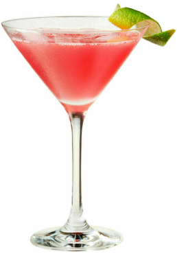
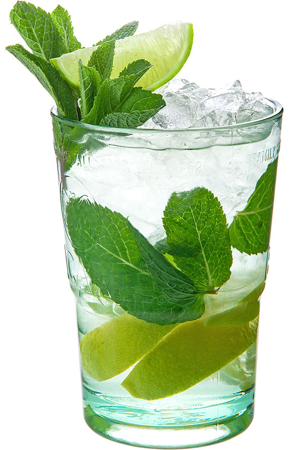

Космополитен
Мохито
Май тай
Маргарита
Пина колада
Голубая лагуна
Лонг айленд айс ти
Негрони
Секс на пляже
Джин тоник
Дайкири
Олд фешен
Белый русский
Апероль Шприц
Б-52

Космополитен
Ингридиенты
- Цитрусовая водка Finlandia 40 мл
- Трипл сек De Kuyper 20 мл
- Клюквенный сок 50 мл
- Лаймовый сок 10 мл
- Апельсиновая цедра 1 шт
- Лед в кубиках 200 гр
Что нужно
- Коктейльный бокал
- Стрейнер
- Шейкер
- Пресс для цитрусовых
- Нож для цедры
- Джиггер
- Горелка
Рецепт
- Налей в шейкер лаймовый сок 10 мл, клюквенный сок 50 мл, ликер трипл сек 20 мл и цитрусовую водку 40 мл
- Наполни шейкер кубиками льда и взбей
- Перелей через стрейнер в охлажденный коктейльный бокал
- Зажги над коктейлем горелку и выжми на нее масло из апельсиновой цедры

Мохито
Ингридиенты
- Белый ром 50 мл
- Сахарный сироп 15 мл
- Лайм 80 г
- Мята 3 г
- Дробленый лед 200 г
Что нужно
- Хайбол
- Мадлер
- Джиггер
- Коктейльная ложка
- Трубочки 2 шт
Рецепт
- Положи в хайбол лайм 3 дольки и подави мадлером
- Возьми мяту 10 листиков в одну руку и хлопни по ним другой рукой
- Положи мяту в хайбол
- Наполни бокал дробленым льдом доверху
- Добавь сахарный сироп 15 мл и белый ром 50 мл
- Долей содовую доверху и аккуратно размешай коктейльной ложкой
- Досыпь немного дробленого льда
- Укрась веточкой мяты и долькой лайма

Май тай
Ингридиенты
- Выдержанный ром 50 мл
- Ликер драй оранж De Kuyper 20 мл
- Сахарный сироп 10 мл
- Лайм 30 г
- Мята 1 г
- Дробленый лед 150 г
- Лед в кубиках 200 г
Что нужно
- Рокс
- Стрейнер
- Шейкер
- Джиггер
- Пресс для цитрусовых
- Трубочки 2 шт
Рецепт
- Наполни рокс дробленым льдом доверху
- Налей в шейкер лаймовый сок 20 мл, сахарный сироп 10 мл, миндальный сироп 10 мл, ликер драй оранж 20 мл и выдержанный ром 50 мл
- Наполни шейкер кубиками льда и взбей
- Перелей через стрейнер в рокс
- Досыпь немного дробленого льда
- Укрась долькой лайма и веточкой мяты

Маргарита
Ингридиенты
- Серебряная текила Sierra 50 мл
- Трипл сек De Kuyper 25 мл
- Сахарный сироп 10 мл
- Лаймовый сок 30 мл
- Лайм 10 г
- Соль 2 г
- Лед в кубиках 200 г
Что нужно
- Бокал маргарита
- Стрейнер
- Шейкер
- Джиггер
- Пресс для цитрусовых
Рецепт
- Сделай на бокале для маргариты соленую окаемку
- Налей в шейкер лаймовый сок 30 мл, сахарный сироп 10 мл, ликер трипл сек 25 мл и серебряную текилу 50 мл
- Наполни шейкер кубиками льда и взбей
- Перелей через стрейнер в охлажденный бокал для маргариты
- Укрась кружком лайма
Пина колада
Ингридиенты
- Белый ром 60 мл
- Темный ром 15 мл
- Кокосовый сироп 40 мл
- Лаймовый сок 20 мл
- Ананас 1 кг
- Коктейльная вишня красная 5 г
- Дробленый лед 60 г
Что нужно
- Харрикейн
- Джиггер
- Слайсер для ананаса
- Пресс для цитрусовых
- Совок для льда
- Трубочки 2 шт
- Коктейльная шпажка
- Соковыжималка
- Блендер
Рецепт
- Вырежи мякоть ананаса слайсером и выжми сок
- Налей в блендер лаймовый сок 20 мл, свежевыжатый ананасовый сок 100 мл, кокосовый сироп 40 мл, темный ром 15 мл и белый ром 60 мл
- Насыпь в блендер совок дробленого льда и взбей
- Перелей в харрикейн
- Укрась ананасовым листом и коктейльной вишней на шпажке
Голубая лагуна
Ингридиенты
- Водка Finlandia 50 мл
- Ликер блю кюрасао De Kuyper 20 мл
- Спрайт 150 мл
- Ананас 30 г
- Лед в кубиках 200 г
Что нужно
- Харрикейн
- Джиггер
- Коктейльная ложка
- Трубочки 2 шт
Рецепт
- Наполни харрикейн кубиками льда доверху
- Налей ликер блю кюрасао 20 мл и водку 50 мл
- Долей спрайт доверху и аккуратно размешай коктейльной ложкой
- Укрась долькой ананаса
Лонг айленд айс ти
Ингридиенты
- Водка Finlandia 30 мл
- Белый ром 30 мл
- Серебряная текила Sierra 30 мл
- Лондонский сухой джин 30 мл
- Трипл сек De Kuyper 30 мл
- Сахарный сироп 30 мл
- Лимонный сок 30 мл
- Кола 100 мл
- Лимон 40 г
- Лед в кубиках 300 г
Что нужно
- Хайбол
- Джиггер
- Коктейльная ложка
- Пресс для цитрусовых
- Трубочки 2 шт
Рецепт
- Наполни хайбол кубиками льда доверху
- Налей лимонный сок 30 мл, сахарный сироп 30 мл и ликер трипл сек 30 мл
- Добавь водку 30 мл, джин 30 мл, белый ром 30 мл и серебряную текилу 30 мл
- Долей колу доверху и аккуратно размешай коктейльной ложкой
- Укрась долькой лимона